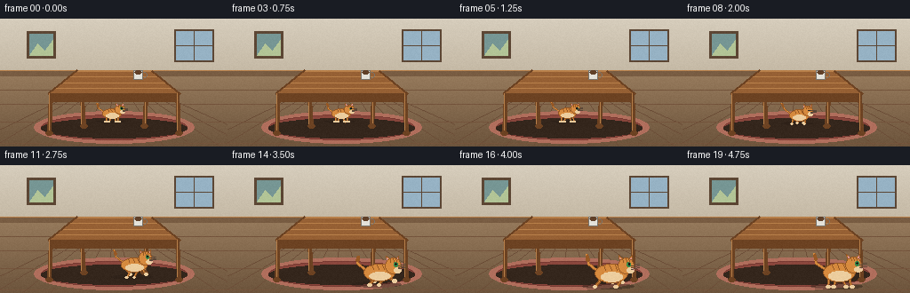
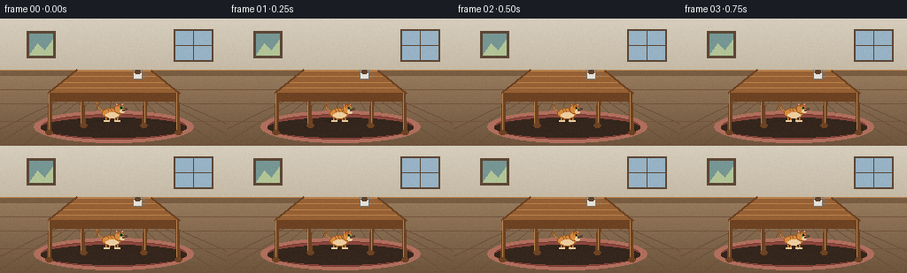

CODING AGENTS AS PIXEL WORLD MODELS
traex/Seed-2.1-Pro-0915 · dynamic_spatial_relationship_0017
点击播放 · 原生 RGB 像素
逐轮保存的候选
回放视频、检查图与代码变化。
每份候选均可单独播放。实际图片检查记录在下方工具轨迹中。
候选 01播放与检查图
点击播放 · 原生 RGB 像素


展开代码变化
--- 上一保存版本
+++ 本次保存版本
@@ -0,0 +1,342 @@
+"""Procedural text-to-video: a cat under a table runs to the front of the table.
+
+Renders 20 RGB frames (256x144, 4 fps) with PIL/numpy only. The scene is a
+fixed room with a perspective table. The cat starts beneath the table
+(occluded by the front legs/apron), then runs toward the camera and stops in
+front of the table, growing in apparent size as it approaches.
+"""
+import json
+import math
+from pathlib import Path
+
+import numpy as np
+from PIL import Image, ImageDraw
+
+import artifact_io
+
+CASE_DIR = Path(__file__).parent
+W, H, N, FPS = 256, 144, 20, 4.0
+
+# ---------------------------------------------------------------------------
+# Palette
+# ---------------------------------------------------------------------------
+WALL_TOP = (214, 205, 188)
+WALL_BOT = (196, 184, 164)
+FLOOR_TOP = (150, 122, 92)
+FLOOR_BOT = (108, 84, 60)
+BASEBOARD = (120, 92, 66)
+RUG = (138, 70, 60)
+RUG_EDGE = (176, 110, 92)
+WOOD = (150, 96, 52)
+WOOD_DARK = (108, 66, 34)
+WOOD_LIGHT = (184, 128, 74)
+CAT_FUR = (214, 138, 62)
+CAT_FUR_DARK = (150, 88, 36)
+CAT_CREAM = (236, 205, 158)
+CAT_PINK = (222, 150, 148)
+CAT_EYE = (58, 138, 74)
+SHADOW = (40, 28, 20)
+
+
+def lerp(a, b, t):
+ return a + (b - a) * t
+
+
+def smoothstep(t):
+ t = max(0.0, min(1.0, t))
+ return t * t * (3 - 2 * t)
+
+
+def draw_background(img):
+ """Wall, floor, baseboard, picture frame, floorboards, rug."""
+ draw = ImageDraw.Draw(img)
+ horizon = 62
+ for y in range(H):
+ if y < horizon:
+ t = y / horizon
+ c = tuple(int(lerp(WALL_TOP[i], WALL_BOT[i], t)) for i in range(3))
+ else:
+ t = (y - horizon) / (H - horizon)
+ c = tuple(int(lerp(FLOOR_TOP[i], FLOOR_BOT[i], t)) for i in range(3))
+ draw.line([(0, y), (W, y)], fill=c)
+
+ # Baseboard
+ draw.rectangle([0, horizon - 4, W, horizon + 2], fill=BASEBOARD)
+ draw.line([(0, horizon - 4), (W, horizon - 4)], fill=WOOD_LIGHT)
+
+ # Floorboards converge toward a vanishing point near the center.
+ vp = (128, horizon)
+ for x in range(-40, W + 60, 32):
+ draw.line([(x, H), vp], fill=(FLOOR_BOT[0], FLOOR_BOT[1] - 6, FLOOR_BOT[2] - 4))
+ for y in (80, 96, 116, 140):
+ draw.line([(0, y), (W, y)], fill=(FLOOR_BOT[0] + 8, FLOOR_BOT[1], FLOOR_BOT[2]))
+
+ # Wall picture frame.
+ draw.rectangle([30, 14, 62, 44], fill=(92, 70, 52))
+ draw.rectangle([33, 17, 59, 41], fill=(118, 150, 148))
+ draw.polygon([(33, 41), (42, 28), (50, 36), (59, 24), (59, 41)], fill=(178, 196, 150))
+
+ # Window on the right with cross bars.
+ draw.rectangle([196, 12, 240, 48], fill=(150, 178, 196), outline=(92, 70, 52), width=2)
+ draw.line([(218, 12), (218, 48)], fill=(92, 70, 52))
+ draw.line([(196, 30), (240, 30)], fill=(92, 70, 52))
+
+ # Rug (ellipse in perspective).
+ draw.ellipse([38, 104, 218, 140], fill=RUG_EDGE)
+ draw.ellipse([46, 108, 210, 136], fill=RUG)
+ draw.arc([46, 108, 210, 136], 0, 360, fill=(120, 58, 50))
+
+
+# ---------------------------------------------------------------------------
+# Table
+# ---------------------------------------------------------------------------
+TOP_BACK_L = (86, 58)
+TOP_BACK_R = (170, 58)
+TOP_FRONT_R = (202, 84)
+TOP_FRONT_L = (54, 84)
+LEG_FLOOR_Y = 128
+
+
+def table_geometry():
+ bl, br = TOP_BACK_L, TOP_BACK_R
+ fl, fr = TOP_FRONT_L, TOP_FRONT_R
+ back_legs = [((bl[0] + 4, bl[1] + 2), (bl[0] + 8, LEG_FLOOR_Y - 8)),
+ ((br[0] - 4, br[1] + 2), (br[0] - 8, LEG_FLOOR_Y - 8))]
+ front_legs = [((fl[0] + 3, fl[1]), (fl[0] + 1, LEG_FLOOR_Y)),
+ ((fr[0] - 3, fr[1]), (fr[0] - 1, LEG_FLOOR_Y))]
+ return bl, br, fl, fr, back_legs, front_legs
+
+
+def draw_leg(draw, top, bottom, width=5):
+ x0 = (top[0] + bottom[0]) // 2
+ draw.line([top, bottom], fill=WOOD_DARK, width=width)
+ draw.line([(x0 - 1, top[1]), (x0 - 1, bottom[1])], fill=WOOD_LIGHT, width=1)
+ draw.ellipse([bottom[0] - 4, bottom[1] - 2, bottom[0] + 4, bottom[1] + 3], fill=WOOD_DARK)
+
+
+def draw_table_back(img):
+ draw = ImageDraw.Draw(img)
+ _, _, _, _, back_legs, _ = table_geometry()
+ for top, bottom in back_legs:
+ draw_leg(draw, top, bottom)
+
+
+def draw_table_front(img):
+ draw = ImageDraw.Draw(img)
+ bl, br, fl, fr, _, front_legs = table_geometry()
+
+ # Tabletop: top face and grain.
+ draw.polygon([bl, br, fr, fl], fill=WOOD)
+ for f in (0.28, 0.55, 0.8):
+ l = (lerp(bl[0], fl[0], f), lerp(bl[1], fl[1], f))
+ r = (lerp(br[0], fr[0], f), lerp(br[1], fr[1], f))
+ draw.line([l, r], fill=WOOD_LIGHT)
+ draw.line([fl, fr], fill=WOOD_DARK, width=2)
+ draw.line([bl, br], fill=WOOD_LIGHT, width=2)
+ draw.line([bl, fl], fill=WOOD_DARK, width=2)
+ draw.line([br, fr], fill=WOOD_DARK, width=2)
+
+ # Apron under the front edge (occludes a cat that is still under the table).
+ apron = [(fl[0] + 3, fl[1] + 1), (fr[0] - 3, fr[1] + 1),
+ (fr[0] - 5, fr[1] + 9), (fl[0] + 5, fl[1] + 9)]
+ draw.polygon(apron, fill=WOOD_DARK)
+
+ for top, bottom in front_legs:
+ draw_leg(draw, top, bottom)
+
+ # A small mug on the table for scale and interest.
+ mx, my = 150, 66
+ draw.rectangle([mx, my - 8, mx + 10, my + 2], fill=(228, 226, 218), outline=(120, 116, 108))
+ draw.arc([mx + 9, my - 6, mx + 15, my], -90, 90, fill=(120, 116, 108), width=1)
+ draw.ellipse([mx + 1, my - 8, mx + 9, my - 4], fill=(96, 64, 40))
+
+
+def table_shadow(img):
+ draw = ImageDraw.Draw(img)
+ draw.ellipse([46, 112, 210, 134], fill=(52, 38, 28))
+
+
+# ---------------------------------------------------------------------------
+# Cat
+# ---------------------------------------------------------------------------
+def draw_cat(img, cx, gy, s, running, phase, idle_t):
+ """Side-view tabby cat. cx = center x, gy = ground y, s = scale."""
+ layer = Image.new("RGBA", (W, H), (0, 0, 0, 0))
+ d = ImageDraw.Draw(layer)
+
+ bob = math.sin(phase * 2) * 2.0 * s if running else math.sin(idle_t * 2) * 0.6 * s
+ body_cy = gy - 15 * s + bob
+ body_rx, body_ry = 17 * s, 9.5 * s
+ head_r = 8.5 * s
+ head_cx = cx + 15 * s
+ head_cy = body_cy - 8 * s + (bob * 0.4 if running else 0)
+
+ # Ground shadow.
+ sw = 30 * s
+ d.ellipse([cx - sw, gy - 3 * s, cx + sw * 0.8, gy + 2.5 * s],
+ fill=SHADOW + (110,))
+
+ # Tail: curved polyline with a swaying tip.
+ sway = math.sin(phase * 1.5 if running else idle_t * 1.6) * (4 if running else 2.5) * s
+ tail_base = (cx - 15 * s, body_cy - 3 * s)
+ tail_mid = (cx - 24 * s, body_cy - 10 * s)
+ tail_tip = (cx - 27 * s + sway, body_cy - 20 * s + sway * 0.4)
+ d.line([tail_base, tail_mid, tail_tip], fill=CAT_FUR_DARK, width=max(2, int(3.4 * s)))
+ d.line([tail_base, tail_mid, tail_tip], fill=CAT_FUR, width=max(1, int(2 * s)))
+ for f in (0.45, 0.75):
+ tx = lerp(tail_mid[0], tail_tip[0], f)
+ ty = lerp(tail_mid[1], tail_tip[1], f)
+ d.ellipse([tx - 1.6 * s, ty - 1.6 * s, tx + 1.6 * s, ty + 1.6 * s], fill=CAT_FUR_DARK)
+
+ # Legs: diagonal pairs swing in opposition while running.
+ leg_xs = [-11, -5, 5, 11]
+ pair_phase = [0, math.pi, math.pi, 0]
+ hip_y = body_cy + 5 * s
+ for i, lx in enumerate(leg_xs):
+ hx = cx + lx * s
+ if running:
+ swing = math.sin(phase + pair_phase[i]) * 6.5 * s
+ lift = max(0.0, math.sin(phase + pair_phase[i])) * 5 * s
+ foot = (hx + swing, gy - lift)
+ knee = (hx + swing * 0.4, (hip_y + gy) / 2 - lift * 0.5)
+ else:
+ foot = (hx + (2 if i >= 2 else -1) * s, gy)
+ knee = (hx, (hip_y + gy) / 2)
+ width = max(2, int(3 * s))
+ d.line([(hx, hip_y), knee, foot], fill=CAT_FUR_DARK, width=width)
+ d.line([(hx, hip_y), knee, foot], fill=CAT_FUR, width=max(1, width - 2))
+ d.ellipse([foot[0] - 2 * s, foot[1] - 1.5 * s, foot[0] + 2.4 * s, foot[1] + 1.6 * s],
+ fill=CAT_CREAM)
+
+ # Body.
+ d.ellipse([cx - body_rx, body_cy - body_ry, cx + body_rx, body_cy + body_ry],
+ fill=CAT_FUR, outline=CAT_FUR_DARK)
+ d.ellipse([cx - 11 * s, body_cy - 1 * s, cx + 12 * s, body_cy + body_ry - 1 * s],
+ fill=CAT_CREAM)
+ for lx in (-8, -2, 4):
+ x0 = cx + lx * s
+ d.line([(x0, body_cy - body_ry + 1), (x0 + 2 * s, body_cy - body_ry + 6 * s)],
+ fill=CAT_FUR_DARK, width=max(1, int(1.6 * s)))
+
+ # Ears.
+ ear_pts_l = [(head_cx - 6 * s, head_cy - 3 * s),
+ (head_cx - 7.5 * s, head_cy - 11 * s),
+ (head_cx - 1 * s, head_cy - 6 * s)]
+ ear_pts_r = [(head_cx + 1 * s, head_cy - 6 * s),
+ (head_cx + 6.5 * s, head_cy - 11 * s),
+ (head_cx + 7 * s, head_cy - 3 * s)]
+ d.polygon(ear_pts_l, fill=CAT_FUR, outline=CAT_FUR_DARK)
+ d.polygon(ear_pts_r, fill=CAT_FUR, outline=CAT_FUR_DARK)
+ inner_l = [(head_cx - 5.4 * s, head_cy - 4.5 * s),
+ (head_cx - 6.2 * s, head_cy - 9 * s),
+ (head_cx - 2.4 * s, head_cy - 6.2 * s)]
+ inner_r = [(head_cx + 2.4 * s, head_cy - 6.2 * s),
+ (head_cx + 5.4 * s, head_cy - 9 * s),
+ (head_cx + 5.8 * s, head_cy - 4.5 * s)]
+ d.polygon(inner_l, fill=CAT_PINK)
+ d.polygon(inner_r, fill=CAT_PINK)
+
+ # Head.
+ d.ellipse([head_cx - head_r, head_cy - head_r, head_cx + head_r, head_cy + head_r],
+ fill=CAT_FUR, outline=CAT_FUR_DARK)
+ d.ellipse([head_cx + 1 * s, head_cy + 2 * s, head_cx + 9 * s, head_cy + 7.5 * s],
+ fill=CAT_CREAM)
+ # Eye (occasional blink during the run).
+ blink = running and math.sin(phase * 0.5) > 0.97
+ ex, ey = head_cx + 3.2 * s, head_cy - 1.5 * s
+ if blink:
+ d.line([(ex - 1.6 * s, ey), (ex + 1.6 * s, ey)], fill=(40, 40, 40), width=1)
+ else:
+ d.ellipse([ex - 1.8 * s, ey - 2.2 * s, ex + 1.8 * s, ey + 2.2 * s], fill=CAT_EYE)
+ d.ellipse([ex - 0.6 * s, ey - 1.2 * s, ex + 0.8 * s, ey + 0.4 * s], fill=(20, 20, 20))
+ # Nose and mouth.
+ d.polygon([(head_cx + 7.4 * s, head_cy + 2.6 * s),
+ (head_cx + 9.2 * s, head_cy + 2.6 * s),
+ (head_cx + 8.3 * s, head_cy + 4 * s)], fill=CAT_PINK)
+ # Whiskers.
+ for wy in (-0.5, 1.4, 3.2):
+ d.line([(head_cx + 6 * s, head_cy + wy * s),
+ (head_cx + 14 * s, head_cy + (wy - 1.2) * s)],
+ fill=(90, 70, 55), width=1)
+ # Forehead stripes.
+ for dx in (-3, 0, 3):
+ d.line([(head_cx + dx * s, head_cy - head_r + 1),
+ (head_cx + (dx + 0.8) * s, head_cy - head_r + 4.5 * s)],
+ fill=CAT_FUR_DARK, width=1)
+
+ img.paste(Image.alpha_composite(img.convert("RGBA"), layer).convert("RGB"), (0, 0))
+
+
+# ---------------------------------------------------------------------------
+# Motion design
+# ---------------------------------------------------------------------------
+def cat_pose(frame):
+ """(cx, ground_y, scale, depth, running, gait_phase, idle_t).
+
+ depth 0 = tucked under the table (back), 1 = in front of it (foreground).
+ Frames 0-6 idle under the table, 7-16 run forward, 17-19 settle in front.
+ """
+ idle_t = frame * 0.5
+ if frame <= 6:
+ depth = 0.0
+ running = False
+ phase = 0.0
+ cx = 126 + math.sin(idle_t * 1.2) * 2.0
+ elif frame <= 16:
+ u = smoothstep((frame - 6) / 10)
+ depth = u
+ running = True
+ phase = (frame - 6) * 1.7
+ cx = lerp(126, 176, u)
+ else:
+ depth = 1.0
+ running = False
+ phase = 10 * 1.7
+ cx = 176 + math.sin((frame - 16) * 0.8) * 0.8
+
+ gy = lerp(116, 137, depth)
+ scale = lerp(0.6, 1.08, depth)
+ return cx, gy, scale, depth, running, phase, idle_t
+
+
+def render_frame(frame, grain):
+ cx, gy, s, depth, running, phase, idle_t = cat_pose(frame)
+
+ def base():
+ img = Image.new("RGB", (W, H))
+ draw_background(img)
+ table_shadow(img)
+ draw_table_back(img)
+ return img
+
+ # Two depth composites: cat behind the front apron/legs versus in front of
+ # them. Cross-fading avoids a pop as the cat passes the table's front edge.
+ behind = base()
+ draw_cat(behind, cx, gy, s, running, phase, idle_t)
+ draw_table_front(behind)
+
+ front = base()
+ draw_table_front(front)
+ draw_cat(front, cx, gy, s, running, phase, idle_t)
+
+ alpha = smoothstep((depth - 0.15) / 0.45)
+ img = Image.blend(behind, front, alpha)
+
+ arr = np.asarray(img).astype(np.int16) + grain
+ return np.clip(arr, 0, 255).astype(np.uint8)
+
+
+def main():
+ spec = json.loads((CASE_DIR / "task_spec.json").read_text())
+ n, w, h = spec["frames"], spec["width"], spec["height"]
+ rng = np.random.default_rng(7)
+ grain = rng.integers(-3, 4, size=(h, w, 1), dtype=np.int16)
+
+ frames = np.stack([render_frame(i, grain) for i in range(n)], axis=0)
+ assert frames.shape == (n, h, w, 3)
+ artifact_io.save(frames, CASE_DIR)
+ print(f"Saved {n} frames {w}x{h} at {spec['fps']} fps to {CASE_DIR}")
+
+
+if __name__ == "__main__":
+ main()
可观测工具轨迹
实际执行的命令与返回图片。
命令 1exit 0
/bin/bash -lc 'cat prompt.txt GENERATION_RULES.md task_spec.json 2>/dev/null; ls -la'
命令 2exit 0
/bin/bash -lc 'cat artifact_io.py'
命令 3exit 0
/bin/bash -lc 'cd . && python generate.py && ls -la'
保存候选 1 份；完成命令 3 次；可验证图片返回 0 张。原始 API 响应与完整日志保留在本地。